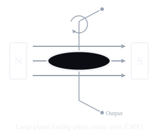

Show a single loop of wire rotating on a central axis between N and S poles, and that the loop's position relative to the field determines whether it is cutting flux at the maximum rate (near-peak EMF) or not at all (near-zero EMF).
essential
both
mechanical: PASS
SIMULATED SEMANTIC (mock pipeline, not a real review): PASS
human review: not required
Traceability & contract detail
- Diagram blueprint
generator.rotating_loop(magnetic_field)- Visual semantic contract
visual-contract.ac-generator-rotating-loop- Assertion family
- electrical.emf_and_generation
- Atomic assertions
- EL-CONCEPT-AC-GENERATOR-001, EL-CONCEPT-SINE-WAVE-001
- Capability
- cap.emf.describe_ac_generation
- Question blueprints
- emf.describe_ac_generation
- Must show
- a labelled north pole; a labelled south pole; a rotating loop between them; a central rotation axis; a minimal slip-ring/output connection
- Must not show
- a waveform overlay (this pairs with the separate, existing graph.waveform_sine blueprint, never merged into one image); the static motor-principle diagram substituted for this rotating-loop concept (the defect this blueprint fixes); three-phase alternators, phasors or any vector-maths depiction
- Variant id
visual-contract.ac-generator-rotating-loop@1::mode=both,rotation_phase=horizontal::both- Image SHA-256
dfe63a0c4338443fad1026a8ebd8153acebdc5d3f6c1f6102d5e6bfa23ca6759
Pass A (blind observation) & Pass B (semantic verification)
⚠ This is a SIMULATED result from a deterministic mock pipeline, not a real AI/vision review. It proves the QA architecture processes this image correctly end-to-end -- it is not evidence that any model has actually looked at this image and approved it. Real semantic review has not yet been run against this or any image in this catalogue (see the summary banner above).
Reviewer identity: mock-provider-v1 — cache: reused
Observed: diagram element
No issues reported.